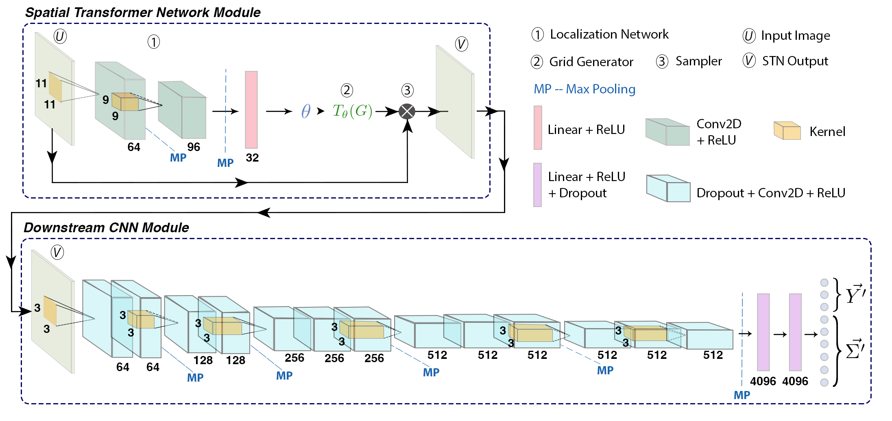
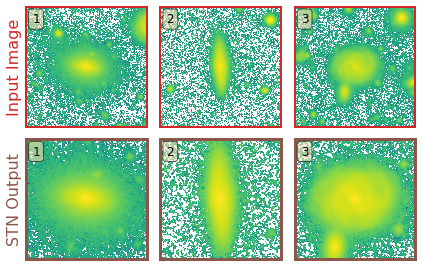

GaMPEN

Galaxy Morphology Posterior Estimation Network
The first ML framework for automatic cropping & estimating posteriors of different galaxy morphological parameters
What does GaMPEN do & Why was it needed?
Although Convolutional Neural Networks (CNNs) have used for galaxy morphology determination for quite some time now, a few challenges associated with the process has persisted. From the early attempts at using a CNN to classify galaxies morphologically to the largest ML-produced morphological catalogs currently available, most CNNs have provided broad morphological classifications. There has been very limited work on estimating morphological parameters using CNNs; and there has been no work on estimating robust uncertainties of CNN determined morphological parameters. Even popular non-ML tools like Galfit severely underestimate uncertainties by values as high as $\sim75\%$. Meanwhile, the computation of full Bayesian posteriors for different morphological parameters is crucial for drawing scientific inferences that account for uncertainty and thus are indispensable in the derivation of robust scaling relations or tests of theoretical models using morphology.
One other challenge of using CNNs in astronomy, is the necessity ot use fixed cutout sizes. Most previous work has resorted to selecting a large cutout size for which "most galaxies" would remain in the frame. However, this means that for many galaxies in the dataset, especially smaller ones, typical cutouts contain other galaxies in the frame, often leading to less accurate results. Thus, this becomes a problem when applying CNNs to galaxies over a wide magnitude and redshift range.
In order to address both these challenges, we developed GaMPEN.
- GaMPEN automatically crops input images to an optimal size before determining their morphology.
- GaMPEN estimates Bayesian posterior distributions for a galaxy's bulge-to-total light ratio ($L_B/L_T$), radius($R_e$), and flux. (It can be easily adapted to predict other parameters).
- GaMPEN takes into account both aleatoric & epistemic uncertainties
- GaMPEN's produced uncertainties/posteriors are extremely well-calibrated and accurate. ($\lesssim 5\%$ derivation)
- GaMPEN incorporates the full covariance matrix in its loss function allowing it to achieve well-calibrated uncertainties for all three variables simultaneously.
GaMPEN's Architecture

GaMPEN's design is based on our previously successful classification CNN, GaMorNet, as well as as different variants of the Oxford Visual Geometry Group networks. We tried a variety of different architectures before finally converging on this design.
How does GaMPEN automatically crop galaxies?

In GaMPEN, the STN is upstream of the CNN, where it applies a two-dimensional affine transformation to the input image. Each input image is transformed differently by the STN, which learns the appropriate cropping during the training of the downstream CNN without additional supervision.
To perform the transformation the STN predicts the six-parameter matrix of the affine transformation $A_{\theta}$ to be applied to the input image. $$ \left(\begin{array}{c} x_{i}^{s} \\ y_{i}^{s} \end{array}\right) = A_{\theta}\left(\begin{array}{c} x_{i}^{t} \\ y_{i}^{t} \\ 1 \end{array}\right) = \left[\begin{array}{lll} \theta_{11} & \theta_{12} & \theta_{13} \\ \theta_{21} & \theta_{22} & \theta_{23} \end{array}\right]\left(\begin{array}{c} x_{i}^{t} \\ y_{i}^{t} \\ 1 \end{array}\right) $$ where $ \left(x_i^s,y_i^s\right)$ and $ \left( x_i^t, y_i^t \right) $ are the source and target co-ordinates respectively. As the network trains, the predicted transformation alters slowly based on the loss function.

The primary benefit of using an STN is that:- without any additional training needed, the STN learns to systematically crop out secondary galaxies in the cutouts and focus on the galaxy of interest at the center of the cutout.
Prediction Stability Against Rotational Transformations

Although CNNs learn to recognize features that are invariant under translation -- the learned features are typically not rotationally invariant. However, this is a problem if CNNs are to be used in astronomy -- especially, for determining the morphology of galaxies. A CNN should be able to identify the same galaxy at two different orientations and return the same values. But is this true? To what level are the predictions stable?
The above video shows the stability of predictions by GaMPEN when an input galaxy image is rotated through various angles. GaMPEN's predictions of all three output parameters -- bulge-to-total light ratio ($L_B/L_T$), effective radius ($R_e$), and flux -- are stable against rotations.The modes of the predicted values deviate by $\lesssim 5\%$. This importantly shows to what level the predictions are stable against rotations.
Posterior Estimation/Uncertainty Prediction

Our training data consists of noisy input images by design, but we know the corresponding morphological parameters with perfect accuracy. However, due to the different amounts of noise in each image, the predictions of GaMPEN at test time should have different levels of uncertainties. Thus, in this situation, we train GaPEN to predict aleatoric uncertainties.
Although we would like to use GaMPEN to predict aleatoric uncertainties, the covariance matrix, $\boldsymbol{\Sigma}$, is not known {\it a priori}. Instead, we train GaMPEN to learn these values by minimizing the negative log-likelihood of the output parameters for the training set, which can be written as $$ \begin{split} - \log \mathcal{L}_{VI} \propto \sum_{n} & \frac{1}{2}\left[\boldsymbol{Y}_{n}-\boldsymbol{\hat{\mu}}_{n}\right]^{\top} \boldsymbol{\hat{\Sigma_n}}^{-1}\left[\boldsymbol{Y}_{n}-\boldsymbol{\hat{\mu}}_{n}\right] \\ & + \frac{1}{2} \log [\operatorname{det}(\boldsymbol{\hat{\Sigma_n}})] + \lambda \sum_{i}\left\|\boldsymbol{\omega_{i}}\right\|^{2} . \end{split} $$ where $\boldsymbol{\hat{\mu}}_n$ and $\boldsymbol{\hat{\Sigma}}_n$ are the mean and covariance matrix of the multivariate Gaussian distribution predicted by GaMPEN for an image, $\boldsymbol{X}_n$. $\lambda$ is the strength of the regularization term, and $\boldsymbol{\omega}_i$ are sampled from $q(\boldsymbol{\omega})$. Note that the above function contains the inverse and determinant of the covariance matrix -- calculating can be numerically unstable. Refer to the GaMPEN paper on how to navigate this.
Thus to predict uncertainties:-
- For every image, GaMPEN predicts the parameters of a multivariate Gaussian distribution ($\boldsymbol{\mu}$,$\boldsymbol{\Sigma}$). We then draw a sample from this distribution.
- Now the network is slightly altered using Monte Carlo Dropout, and the above step is re-performed with a slightly different estimate of ($\boldsymbol{\mu}$,$\boldsymbol{\Sigma}$).
- The last step is now repeated 1000 times for each galaxy
The combination of the above two steps allows us to estimate robust uncertainties. By testing GaMPEN on simulated Hyper Suprime-Cam galaxies, we have verified that GaMPEN's predicted posteriors are well-calibrated and accurate. ($\lesssim 5\%$ derivation).
Data & Code Release
GaMPEN's source code and documentation can be accessed on GitHub.
The HSC morphological parameter catalogs are accessible at this link